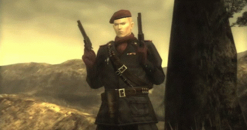
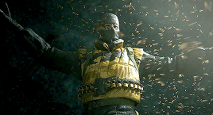
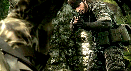
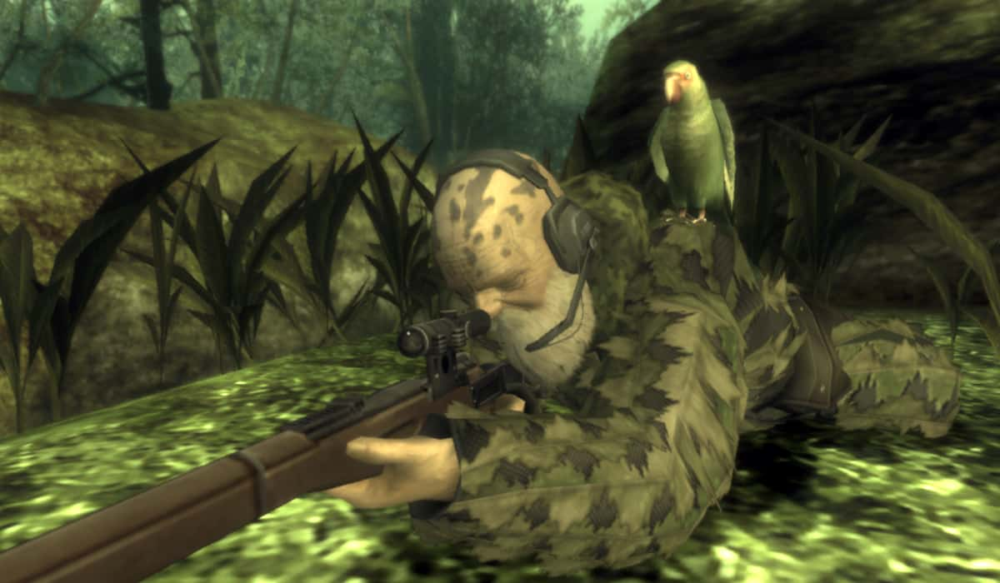
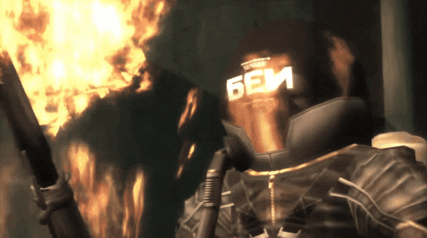
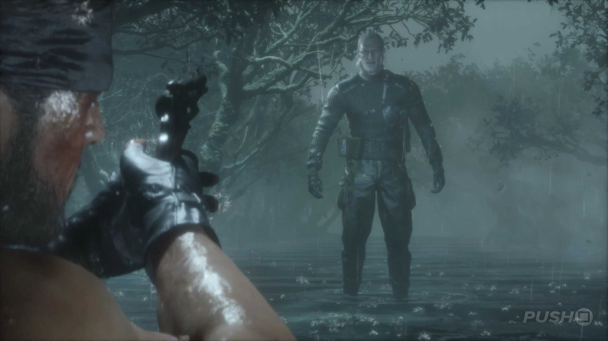
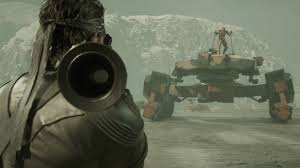
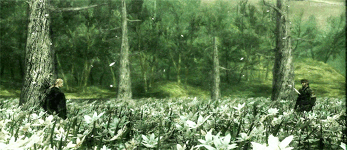

Overview
Throughout the game, players will encounter a variety of bosses that they must defeat in order to progress through the story. These bosses are unique and require players to use different strategies and tactics to defeat them.
Ocelot

Ocelot is a young GRU major who begins as an overconfident and theatrical gunfighter who challenges Snake multiple times. Although he appears to be a straightforward enemy at first, his true loyalties are far more complex. Ocelot's encounters emphasize precision shooting and tactical positioning, reflecting his obsession with revolvers and dueling. Over the course of the story, it becomes clear that he is manipulating events behind the scenes, acting as a double agent with hidden motives. His rivalry with Snake and connection to The Boss play a significant role in shaping the broader Metal Gear timeline.Cobra Unit
The Cobra Unit, a group of elite soldiers who follow The Boss. Each member represents a specific emotion.
The Pain

He is known for his ability to control hornets and use them as weapons in combat, forming both offensive swarms and defensive shields. He symbolizes suffering and endurance, reflecting his codename. His encounter takes place in a watery cave, where he attacks Snake from a distance with hornets while also engaging in close-quarters combat. Players must use the environment strategically, diving into the water to avoid swarms and using grenades to break through his defenses. The combination of his unique abilities and the tense, atmospheric setting makes him a memorable and challenging opponent.The Fear

specializes in camouflage to blend into the environment and attack from unexpected angles. He symbolizes fear and paranoia, reflecting his codename. His encounter takes place in a dense jungle, where he uses his camouflage to hide among the foliage and strike from the shadows. Players must rely on sound cues and careful observation to track his movements, as he can appear suddenly and disappear just as quickly. The combination of stealth mechanics and the eerie atmosphere of the jungle creates a tense and immersive boss fight.The End

His defining trait is being an exceptional marksmanship and ability to use a sniper rifle to attack from long distances. He symbolizes age and wisdom, reflecting his codename. His encounter takes place in a vast jungle environment, where he uses his sniper skills to pick off Snake from afar while also setting traps and using the terrain to his advantage. Players must use stealth and patience to approach him, taking advantage of cover and timing their movements carefully to avoid being sniped. The combination of long-range combat and the strategic use of the environment makes this boss fight extremely memorable and unique.The Fury

He utilizes a flamethrower and jetback causing an aggressive combat style. He symbolizes rage and aggression, reflecting his codename. His encounter takes place in a tight environment, where he uses his flamethrower to create walls of fire and attack Snake with relentless aggression. Players must use quick reflexes and strategic movement to avoid his attacks while also finding opportunities to strike back. The intense heat and chaotic nature of the fight make it a memorable and adrenaline-pumping boss battle.The Sorrow

Has ability to manipulate spirits. He symbolizes sorrow and regret, reflecting his codename. His encounter takes place along a ghostly river, where Snake must walk forward while being confronted by the spirits of enemies he has killed throughout the game. The number of spirits that appear depends on the player’s actions. Unlike other bosses, The Sorrow cannot be defeated through combat, reinforcing the emotional and reflective nature of the encounter.Colonel Volgin
 Colonel Volgin is a high-ranking GRU officer and the main antagonist of the game. He is known for his ability to manipulate electricity, using it as a weapon in combat. He symbolizes power and brutality, reflecting his role as a ruthless and sadistic villain. His encounter takes place in a large fortress, where he uses his electric powers to create devastating attacks and control the environment. Players must use strategy and quick reflexes to avoid his attacks while also finding opportunities to strike back. The combination of his unique abilities and the intense atmosphere of the fight makes it a memorable and challenging boss battle.
Colonel Volgin is a high-ranking GRU officer and the main antagonist of the game. He is known for his ability to manipulate electricity, using it as a weapon in combat. He symbolizes power and brutality, reflecting his role as a ruthless and sadistic villain. His encounter takes place in a large fortress, where he uses his electric powers to create devastating attacks and control the environment. Players must use strategy and quick reflexes to avoid his attacks while also finding opportunities to strike back. The combination of his unique abilities and the intense atmosphere of the fight makes it a memorable and challenging boss battle.
The Shagohod

The Shagohod is a massive nuclear-capable tank contolled by Colonel Volgin. It symbolizes the destructive power of technology and the consequences of unchecked militarization. The encounter takes place in an open battlefield, where players must use a combination of stealth, strategy, and firepower to take down the heavily armored tank. The Shagohod's ability to launch devastating missile attacks and its formidable defenses make it a challenging and memorable boss battle.The Boss

The Boss is a legendary soldier and the mentor of Naked Snake. She is known for her exceptional combat skills and her unwavering loyalty to her country. She symbolizes sacrifice and patriotism, reflecting her role as a tragic hero in the story. Her encounter takes place in a dramatic setting, where players must use all of their skills and resources to defeat her in a one-on-one battle. The emotional weight of the fight, combined with The Boss's formidable abilities, makes it a memorable and impactful boss battle.